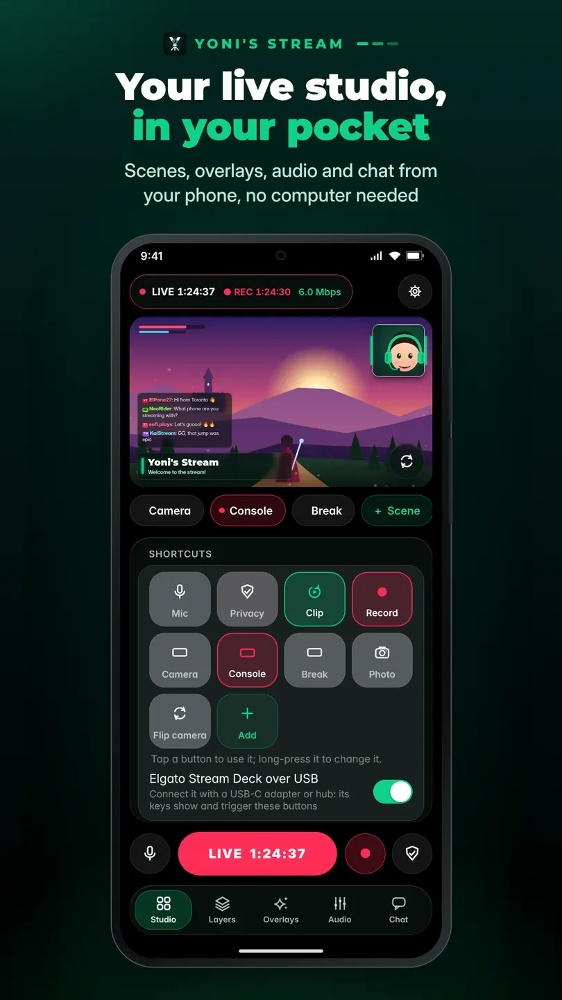
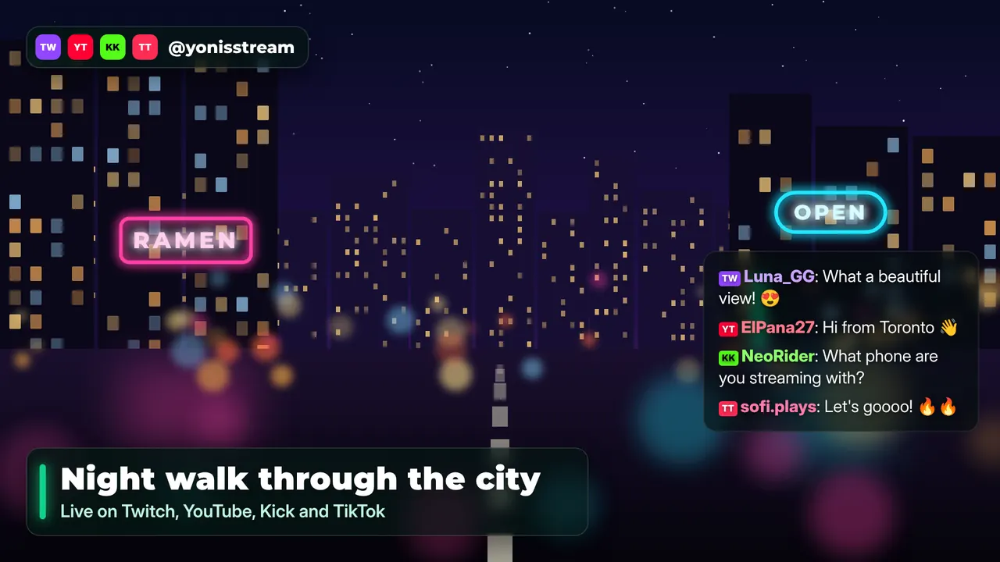

Fai live IRL su Twitch e YouTube con overlay in diretta, dal tuo telefono
Scarica su Google Play17 lingue. Richiede Android 10 o versioni successive e almeno 3 GB di RAM.
IN DIRETTA 6.0 Mbps · 60 fps
Yoni's StreamYoni's Stream trasforma il tuo Android in uno studio di produzione completo: scene, livelli, mixer audio, alert e multistream, senza computer.
Scorri e vai in diretta
UNO STUDIO IN TASCAOVERLAY IN DIRETTAMULTISTREAM E REGISTRAZIONEAUDIO PROCONSOLE, SCHEDE DI ACQUISIZIONE E CAMEREASSISTENTE INTELLIGENTEUNO STUDIO IN TASCAOVERLAY IN DIRETTAMULTISTREAM E REGISTRAZIONEAUDIO PROCONSOLE, SCHEDE DI ACQUISIZIONE E CAMEREASSISTENTE INTELLIGENTE
UNO STUDIO IN TASCAOVERLAY IN DIRETTAMULTISTREAM E REGISTRAZIONEAUDIO PROCONSOLE, SCHEDE DI ACQUISIZIONE E CAMEREASSISTENTE INTELLIGENTEUNO STUDIO IN TASCAOVERLAY IN DIRETTAMULTISTREAM E REGISTRAZIONEAUDIO PROCONSOLE, SCHEDE DI ACQUISIZIONE E CAMEREASSISTENTE INTELLIGENTE
Screenshot
Uno sguardo dentro
Screenshot in

UNO STUDIO IN TASCAScene con livelli: fotocamera posteriore e anteriore, schermo e giochi del telefono, immagini, video, testi, browser e chat.
MULTISTREAM E REGISTRAZIONETrasmetti su più piattaforme insieme via RTMP, RTMPS o SRT: Twitch, YouTube, Kick, TikTok LIVE, Instagram Live, Facebook, X o il tuo server.
OVERLAY IN DIRETTAAlert automatici per sub, bits, raid, Super Chat, membri, Kicks e regali TikTok, con suoni ed effetti (coriandoli, cuori, fuochi d'artificio…).
CONSOLE, SCHEDE DI ACQUISIZIONE E CAMEREPS5 e PS4 via Wi-Fi senza scheda di acquisizione, un PC con OBS o un altro telefono come trasmettitore.
AUDIO PROBilanciamento voce/gioco, ducking, riduzione del rumore, compressore e limiter in uscita.
OVERLAY IN DIRETTAChat di Twitch, YouTube, Kick, TikTok e Discord insieme nella live, con lettura ad alta voce.
UNO STUDIO IN TASCACanvas orizzontale 16:9 e verticale 9:16 insieme, per TikTok, Instagram e YouTube Shorts.
ASSISTENTE INTELLIGENTEConsiglia qualità, audio e posizione della camera in base al tuo gioco o attività e alla tua connessione.
Funzioni
Tutto quello che serve alla tua diretta
Fai live IRL su Twitch e YouTube con overlay in diretta, comodamente dal tuo telefono. Registra i tuoi video con overlay come un professionista.
01 / 06
UNO STUDIO IN TASCA
Scene con livelli: fotocamera posteriore e anteriore, schermo e giochi del telefono, immagini, video, testi, browser e chat.
Modalità studio con anteprima e transizioni: taglio, dissolvenza, scorrimento, movimento e stinger.
Canvas orizzontale 16:9 e verticale 9:16 insieme, per TikTok, Instagram e YouTube Shorts.
Scudo privacy: copre la live durante una chiamata o quando esci dal gioco.
02 / 06
OVERLAY IN DIRETTA
Barre, sottopancia, ticker, obiettivi, conti alla rovescia e i tuoi social, con oltre 2000 font.
Alert automatici per sub, bits, raid, Super Chat, membri, Kicks e regali TikTok, con suoni ed effetti (coriandoli, cuori, fuochi d'artificio…).
Comandi della chat per far lanciare effetti e suoni al tuo pubblico.
Chat di Twitch, YouTube, Kick, TikTok e Discord insieme nella live, con lettura ad alta voce.
Esporta i tuoi overlay su OBS e Streamlabs, oppure importa i tuoi.

03 / 06
MULTISTREAM E REGISTRAZIONE
Trasmetti su più piattaforme insieme via RTMP, RTMPS o SRT: Twitch, YouTube, Kick, TikTok LIVE, Instagram Live, Facebook, X o il tuo server.
Registra fino a 4K a 60 fps con pausa e salva clip degli ultimi secondi.
H.264 e HEVC hardware, bitrate adattivo e riconnessione automatica.
Controllo di calore e batteria per live di molte ore.
0 dB−6−12−24−48
04 / 06
AUDIO PRO
Mixer con microfono, audio interno di giochi e app, musica ed effetti sonori.
Bilanciamento voce/gioco, ducking, riduzione del rumore, compressore e limiter in uscita.
Profili pronti: gioco e voce, chiacchierata, podcast, musica di sottofondo, ASMR e IRL in strada.
05 / 06
CONSOLE, SCHEDE DI ACQUISIZIONE E CAMERE
Schede di acquisizione USB (UVC), anche Elgato.
PS5 e PS4 via Wi-Fi senza scheda di acquisizione, un PC con OBS o un altro telefono come trasmettitore.
Camere IP via RTSP e action cam via RTMP.
Stream Deck di Elgato via USB e pulsanti rapidi sullo schermo.
1080p60 fps6.0 MbpsH.26448 kHzHEVC
06 / 06
ASSISTENTE INTELLIGENTE
Consiglia qualità, audio e posizione della camera in base al tuo gioco o attività e alla tua connessione.
Anche sul tuo tablet
Canvas, pannello e comandi a vista, tutti insieme.
PIANI
Senza piano: prepara scene e overlay.
Prova gratuita di 5 giorni (nuovi account): live e registrazione fino a 1080p a 30 fps, 2 ore al giorno.
Deluxe Studio: fino a 1080p a 60 fps, 5 ore di live al giorno, multistream su 3 piattaforme e riconnessione automatica.
Streamer: tutto senza limiti (4K60, scene e overlay illimitati, tutte le piattaforme, Stream Deck, schede di acquisizione e camere pro, tutti i font, profili audio, filtri, assistente e lettura della chat).
Gli abbonamenti si rinnovano ogni mese e puoi annullarli quando vuoi su Google Play.
PRIVACY
Niente pubblicità né tracciamento. Il tuo video va solo alle piattaforme che scegli; scene e chiavi restano sul tuo telefono e, se vuoi, nel tuo Google Drive.
Un segnale, cinque uscite
Seguimi ovunque
Live, trucchi e novità di Yoni's Stream. Scegli il tuo social preferito e non perderti nulla.